Synthese
- Konzept
- User Persona
Konzept einer Nachhaltigkeits-App für Smartphones und Smartwatches.
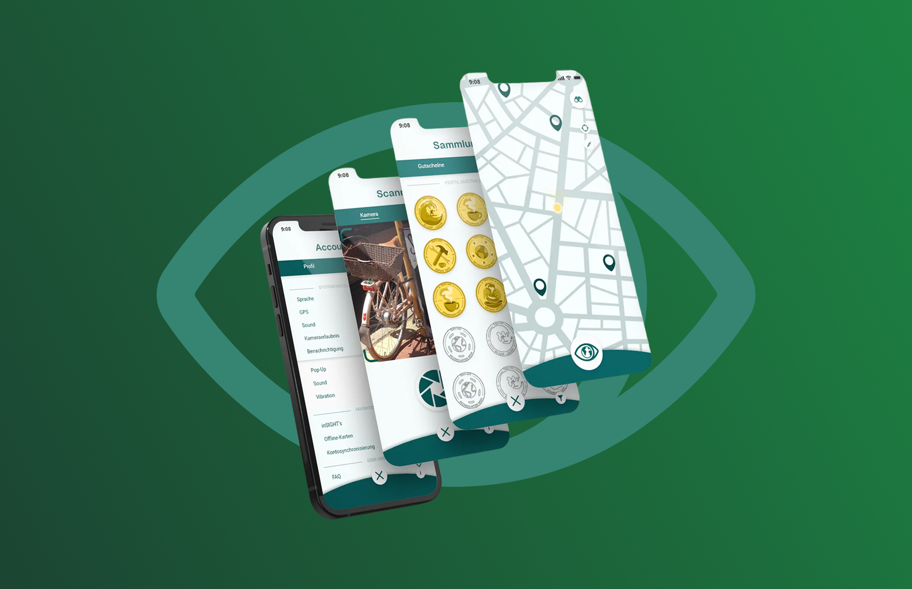
In diesem Universitätsprojekt entwickelten wir ein App-Konzept, das Smartwatches gezielt einbindet und das Thema „Nachhaltigkeit“ spielerisch erlebbar macht. Die thematische Ausrichtung war offen, unser Team entschied sich für den Bereich nachhaltiges Reisen.
Die App “InSIGHTer” soll Nutzer*innen das Thema Nachhaltigkeit beim Reisen spielerisch näher bringen. Während der Reise sollen alternative, lokale Spots entdeckt und vor Ort erkundet werden. Inspiriert von spielerischen Location-Based Games wie Pokémon Go kombiniert das Konzept reale Erkundungstouren mit digitalen Belohnungselementen.
Spielerisches Entdecken | Das Konzept basiert auf einem motivierenden Belohnungssystem: Nutzer*innen entdecken nachhaltige Spots vor Ort und sammeln durch das Scannen eines QR-Codes sogenannte inSIGHT-Münzen.
Diese steigern die Sammellust und können später gegen kleine lokale Belohnungen eingetauscht werden. So entsteht ein stetiger spielerischer Anreiz, immer mehr Orte zu erkunden und nachhaltige Alternativen sichtbar zu machen.
nachhaltiges Reisen | Der inSIGHTer kooperiert weltweit mit Städten, die sich für verbesserte Lebensgrundlagen von lokalen Gemeinschaften engagieren. Er ist eine Initiative der UNESCO, die mit Blick auf die Agenda 2030 bei der Verwirklichung der Ziele für nachhaltige Entwicklung (SDG) die Rolle des Tourismus fördert.
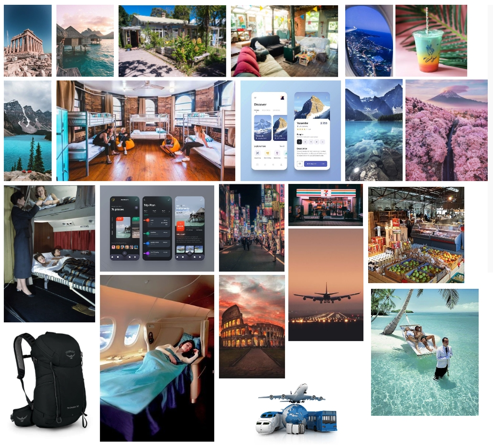
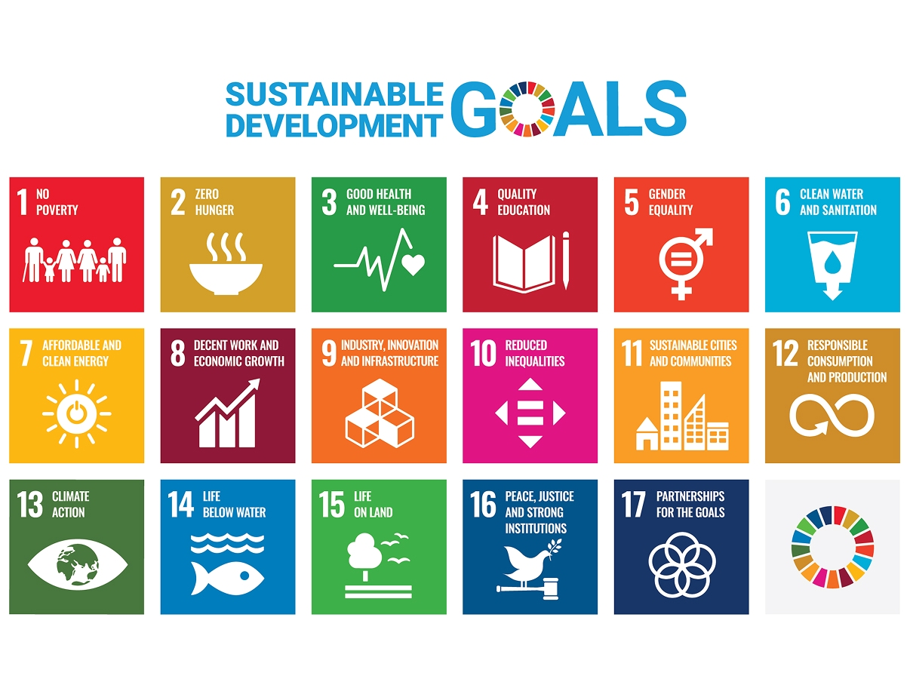
Unsere Hauptpersona ist eine spontan reisende, entdeckungsfreudige Person - jemand, der häufig als Backpacker, Hostel-Gast oder digitaler Nomade unterwegs ist.
Sie schätzt flexible Reiseplanung, liebt es, neue Orte spielerisch zu entdecken und lässt sich von motivierenden Belohnungssystemen begeistern. Gleichzeitig ist sie technikaffin, probiert gerne neue Apps aus und legt großen Wert auf authentische, nachhaltige Reiseerlebnisse.
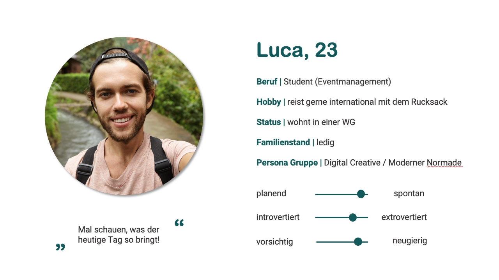
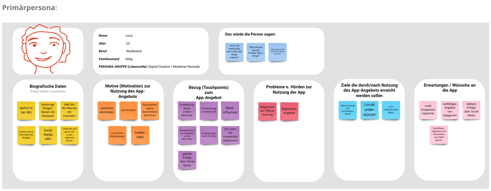
Im Zentrum stehen die „inSIGHTS“, die als Location Points visualisiert werden. Ein Hauptbutton am unteren Bildschirmrand öffnet die Kernbereiche: Profil für Personalisierung und Statistiken, Kamera zum Scannen der QR-Codes der Spots und Erfolg für den Fortschritt und gesammelte Münzen.
Beim Erkunden einer neuen Stadt öffnet die Nutzerin InSIGHTer und sieht die nachhaltigen Spots auf der Karte. Klickt sie auf einen „inSIGHT“, öffnet sich ein Overlay mit allen wichtigen Infos: Beschreibung, Bewertungen, Entfernung, Bilder und die aktuell ergatterte Münze. Über die integrierte Navigation kann sie den Spot ansteuern, optional unterstützt die Apple Watch oder Smartwatch als Wegweiser. Vor Ort findet sie den InSIGHTer QR-Code beim Laden oder fragt danach, scannt ihn und sieht sofort die neue Münze sowie ihren Fortschritt für zukünftige Belohnungen. Über die Smartwatch kann sie direkt eine Bewertung abgeben, bevor sie weiter auf Entdeckungstour geht und weitere Münzen sammelt.
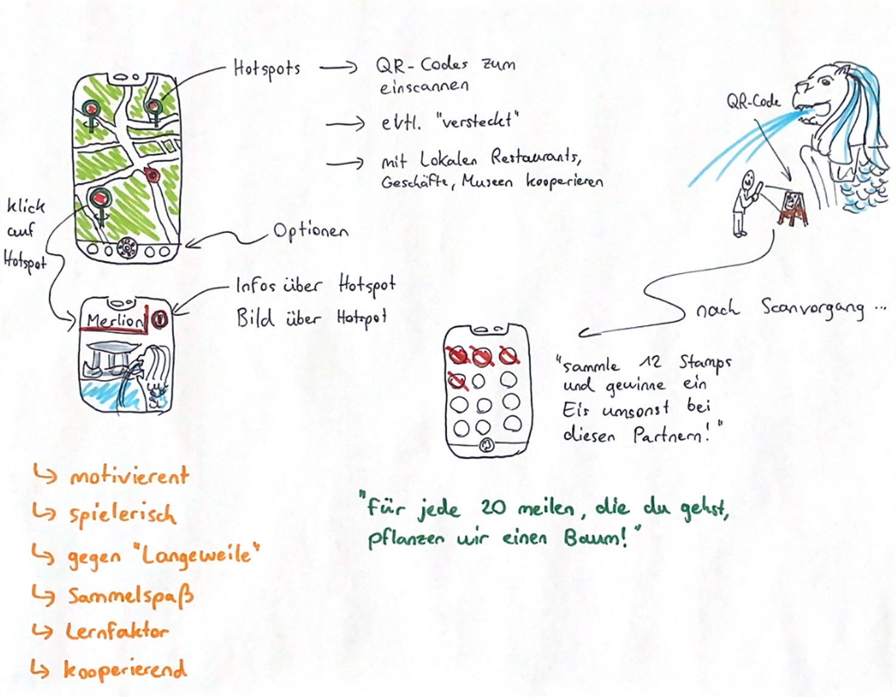
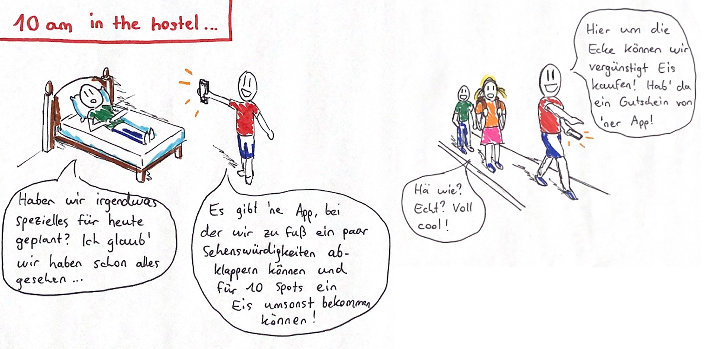
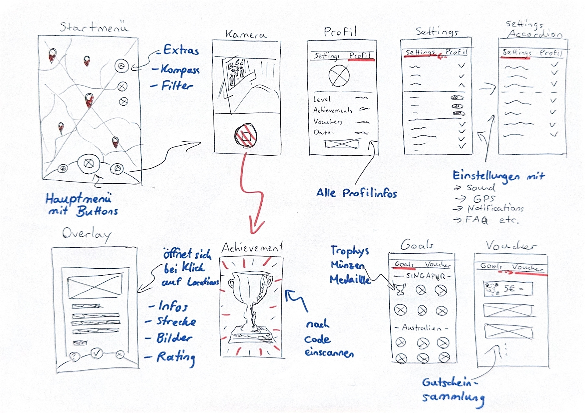
Um InSIGHTer einen klaren Wiedererkennungswert zu geben, haben wir ein konsistentes Designsystem entwickelt, das Logo, Typografie, Farben, Icons und UI-Komponenten umfasst. Alle Elemente unterstützen die spielerische Entdeckung nachhaltiger Spots und sorgen für eine zugängliche, freundliche Nutzererfahrung.
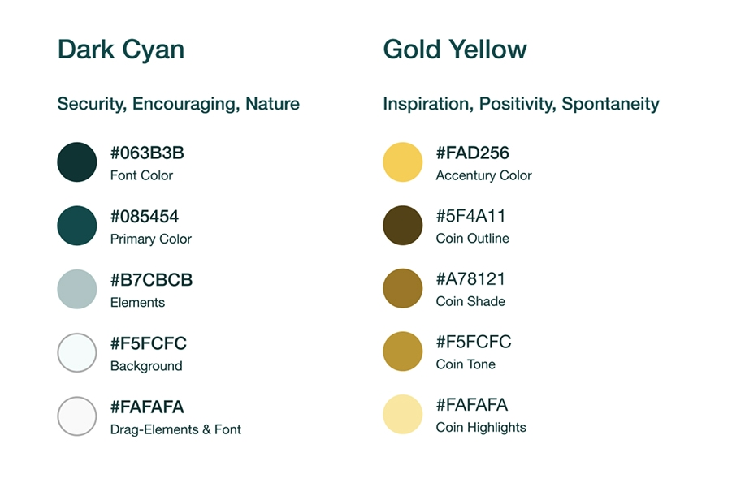
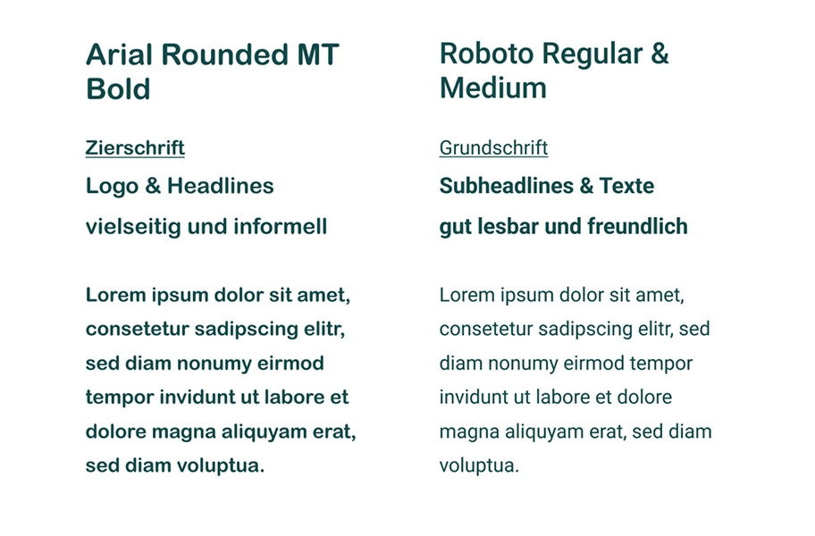
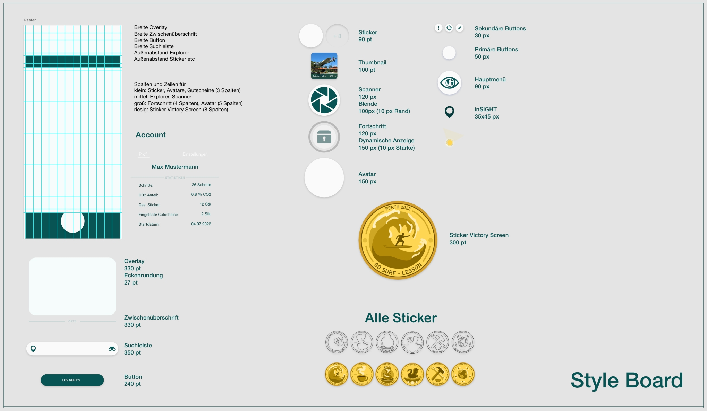
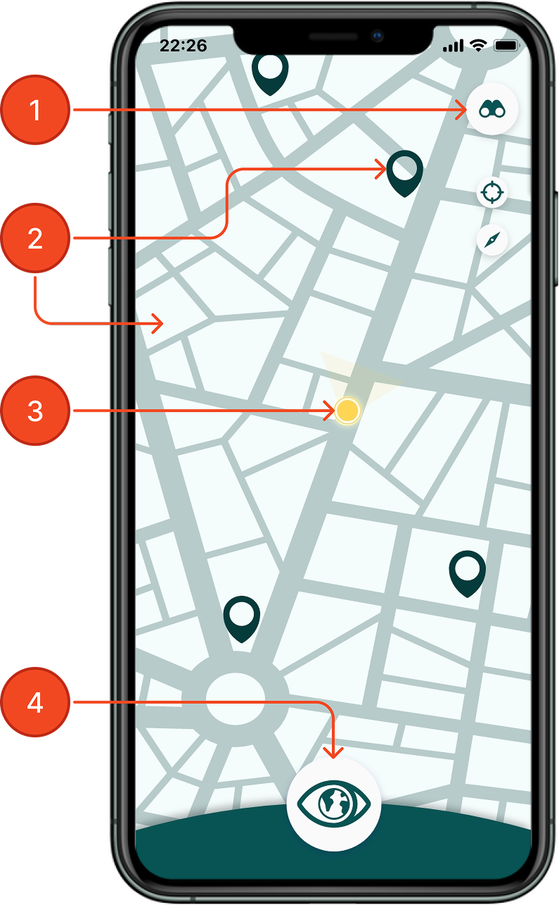
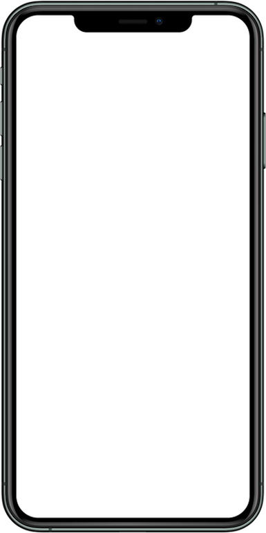
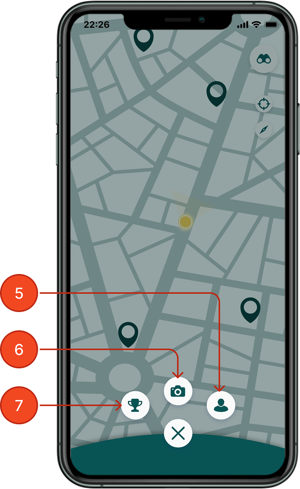